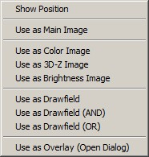

|
图像查看器拖放
|
您可以将其他的数据对象（图像/图谱/位图对象）拖放到图像查看器上，以执行以下操作：

显示位置：
显示拖放对象的位置。您可以拖放任意数量的图像、位图和图谱对象来查看它们的位置：
图像、位图和图像图谱对象显示为矩形。
线扫描图谱对象或横截面图谱对象显示为线条。
单光谱图谱对象显示为十字形。
您可以更改绘图的线宽，参见图像查看器杂项视觉环形菜单中的绘图按钮。
用作主图像：
将拖放的图像用作新的主图像。如果拖放的图像与当前彩色图像尺寸相同，则保留绘制区域掩模，否则将被清除。
用作彩色图像：
拖放的图像用作颜色信息。当您打开以3D图像显示的地形图像，然后想使用化学图像作为颜色纹理/颜色信息时，此功能很有用。
仅当拖放的图像与当前彩色图像具有相同的尺寸和空间变换时才有效。
用作3D-Z图像：
拖放的图像用作3D-Z信息。当您打开化学图像并想使用地形图像作为3D显示模式的3D-Z信息时，此功能很有用。
仅当拖放的图像与当前彩色图像具有相同的尺寸和空间变换时才有效。
用作亮度图像：
拖放的图像用作亮度信息。当您打开化学图像，然后想使用掩模或误差掩模图像作为亮度信息来高亮显示被掩模的像素时，此功能很有用。
如果彩色图像是浮点图像对象，则彩虹颜色标尺（仅包含最大亮度的颜色）对原始图像最有意义。
仅当拖放的图像与当前彩色图像具有相同的尺寸和空间变换时才有效。
快捷键：拖动时按住键盘上的 Shift 键。
用作绘制区域（与、或）：
拖放的图像用作绘制区域掩模。您必须拖放掩模图像，否则很可能会得到一个完全清除或完全设置的掩模。
使用与/或功能对现有绘制区域掩模执行布尔与/或操作。
仅当拖放的图像与当前彩色图像具有相同的尺寸和空间变换时才有效。
快捷键：拖动时按住键盘上的 Control 键。
用作叠加：
此操作将打开图像变换与叠加对话框，可用于绘制叠加并更改拖放图像/测量的空间变换。